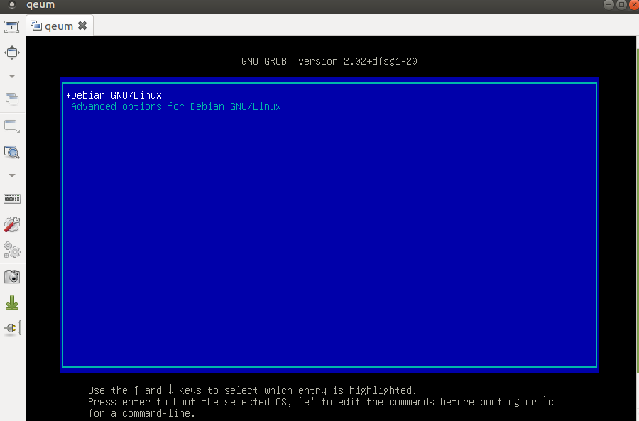

Not all hosting providers offer a free remote console. It makes it difficult to debug certain issues with grub, especially when LUKS and/or LVM is used. Rescue mode, on the other hand, is offered. That removes the need for a remote console in most of the cases.
Reboot your machine in the rescue mode. Check devices with lsblk:
sda 8:0 0 232.9G 0 disk
├─sda1 8:1 0 1G 0 part
└─sda2 8:2 0 231.9G 0 part
In my case, /dev/sda1/ contains un-encrypted boot partition (it is 1GB for historical reasons) and /dev/sda2/ is LUKS-encrypted LVM root partition.
I had issues with the booting and could not use the remote console. QEMU helped me to diagnose the issue from rescue:
qemu-system-x86_64 -snapshot -vnc 0.0.0.0:0 -m 5G -enable-kvm -hda /dev/sda
-
-snapshot, with this option changes won’t be written to/dev/sda. This option is useful if/dev/sdais mounted together withqemurunning. -
-vnc 0.0.0.0:0will open port5900for remote VNC. -
-m 5G, default memory (128 MB) might be too low.
With this running you can use Remmina with VNC protocol to connect to the machine and debug boot-issues:

To test issues of bootloader with raid just add another drive:
qemu-system-x86_64 -snapshot -vnc 0.0.0.0:0 -m 5G -enable-kvm -hda /dev/sda -hdb /deb/sdb